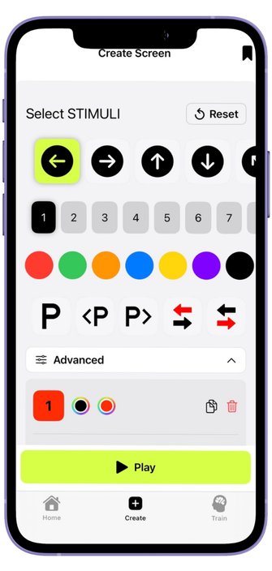
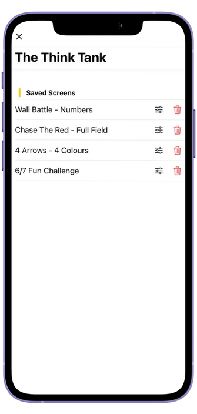
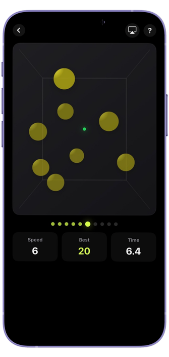
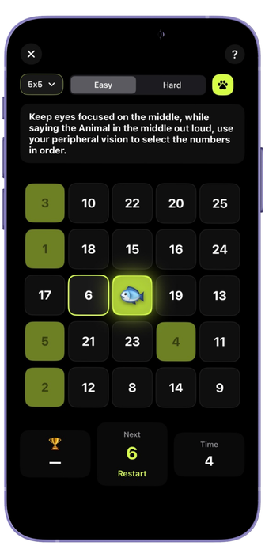
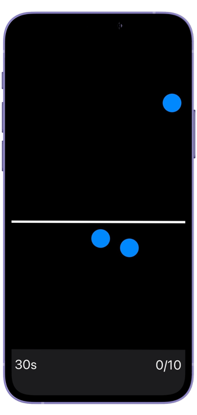
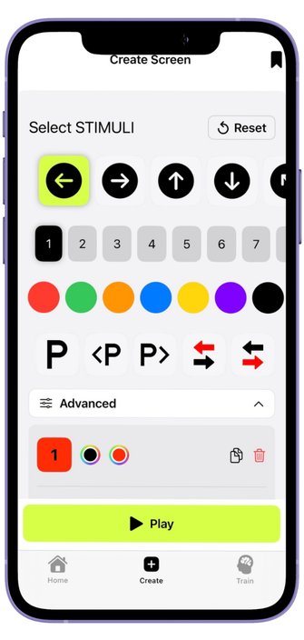
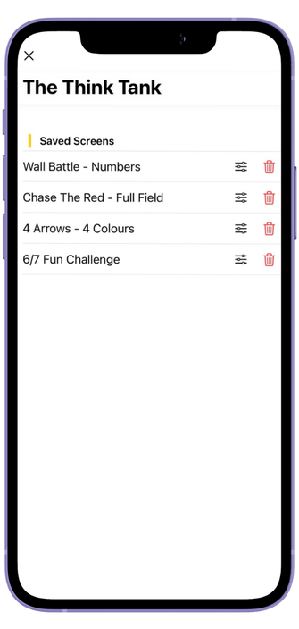
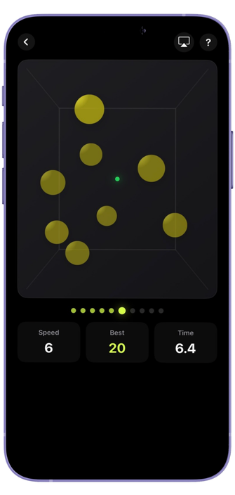
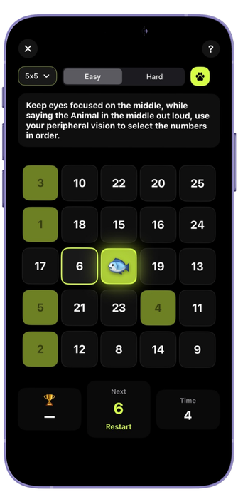
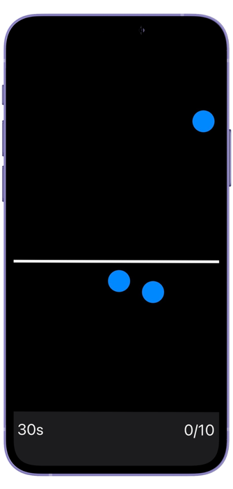

A Delightfully Simple Cognitive Performance Training Tool
Training Drills
Jump straight into cognitive training with ready-to-use drills and activities designed to sharpen focus, anticipation, and game awareness.
Training Screens
Design training that fits your game. Build custom cognitive training screens using colours, numbers, and arrows — tailored to your drills, workouts, or routines.
Reaction Games
React faster. Decide quicker. Train reaction speed and decision-making through fast-paced, engaging cognitive games.
Trusted by coaches, trainers, and performance professionals,
designed for everyday cognitive training
Sports training
Sharpen reads, speed up decisions, and build better anticipation through cognitive performance training — helping you react faster in real game moments.
Fitness & movement
Stay sharp under stress and fatigue. Use short cognitive training blocks alongside movement to support focus, energy, and long-term consistency.
Rehabilitation support
Support visual–motor control, balance, and coordination through structured, reaction-based cognitive training exercises.
Brain wellness
Train focus and mental clarity with simple, repeatable cognitive training sessions that support attention and processing speed.
Perfect for training anywhere — at home, in the gym, at the rink, on the pitch, court, or in the ring.
App preview
 









Frequently Asked Questions
Yes. You can save custom cognitive training screens and reload them at any time to replay the same setup or make adjustments as you progress.
Not yet. Think Then Play is currently available on iOS. Android may be supported in the future depending on demand and development priorities.
You can save multiple training screens. Any limits depend on your current app version and plan, which may evolve over time.
Absolutely. Coaches and trainers use Think Then Play:
- During practices
- In small-group training stations
- As at-home or between-session assignments
Custom screens make it easy to tailor cognitive training drills to different skill levels, goals, and environments.
Think Then Play focuses on training the mental side of performance — the cognitive skills that show up across sport, fitness, and everyday movement:
- Faster reaction time
- Quicker decision-making
- Improved focus under pressure
- Better anticipation and pattern recognition
The app doesn’t replace physical training — it enhances it. By training how your brain processes visual information and reacts to cues, you support faster and more confident responses in real-world situations.
Because the training is sport-agnostic, users apply it across hockey, basketball, football, soccer, combat sports, fitness, and rehabilitation environments.
Think Then Play is designed as a cognitive performance training tool, not a diagnostic or medical device.
Some users incorporate it alongside rehabilitation, vision training, or recovery routines to support visual–motor coordination, focus, and reaction-based exercises. Always follow guidance from qualified professionals when using any training tool in a clinical or recovery setting.
No. All you need is your phone. Many cognitive training drills can be done anywhere using just the screen.
Some users choose to add simple equipment — such as cones, balls, pucks, or steps — but it’s completely optional. You can prop your phone on a tripod, suction mount, tape it to a wall, or have a partner hold it to get started.